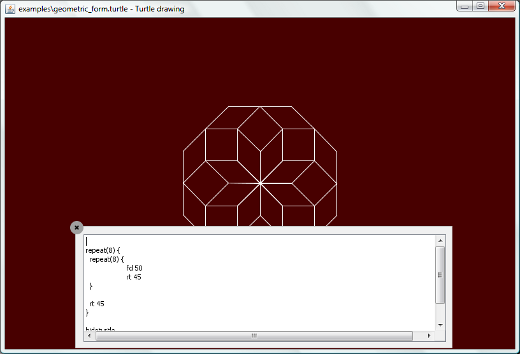

Swiby Demo ApplicationsThis document presents the current demos available in Swiby, a short description, the Swiby features they cover or the points of interest. It also gives the command lines to run them. IntroductionThe demos are available from the trunk in Swiby’s repository. Check out the Swiby core from Codehaus: svn co http://svn.codehaus.org/swiby/trunk/core Chekout the demo applications: svn co http://svn.codehaus.org/swiby/trunk/demo You need to install JRUby. Then you can run the demos. AnimationPresents a very simple animation developed using Swiby, it shows how to implement a DSL to describe the animation. > cd animation > jruby -I../../core/lib smiley_player.rb sad2happy.smiley Or using the default animation > jruby -I../../core/lib smiley_player.rb BankingA simple demo simulating home banking system. Uses the Sweb concept and dynamic styles. > cd banking > jruby -I../../core/lib ../../core/lib/swiby/sweb.rb banking.rb CalculatorA calculator using styles and MVC. > cd calculator > jruby -I../../core/lib calculator.rb ClockDemo displaying a clock with the ability to select a theme. Moving the mouse to the left-border shows a list with the themes. Uses the 2D drawing on top of Java’2D APIs. Shows how loading plugins-like code in Ruby is easy (the available themes get loaded from the ‘themes’ directory). > cd demo/clock > jruby -I../core/lib clock.rb Changing the clock theme… Music ChordsDemo implementing the ruby quiz #229 Music Theory (see http://rubyquiz.strd6.com/quizzes/229-music-theory). > cd demo/chord > jruby -I../../core/lib chord_translator_ui.rb Note: It uses a font to draw the musical symbols downloaded from http://simplythebest.net/fonts/fonts/musical_symbols.html (the font name is “MusicalSymbols”). Hangman GameGame where the player must find a hidden word. Uses the 2D features, MVC, absolute layout and translation support. > cd demo/hangman > jruby -I../../core/lib ../../core/lib/swiby/sweb.rb hangman_ui.rb Hidden Number GameGame where the player must find a hidden number. The implementation of this game was used to present a full development using Swiby (see the ‘Sweb and styles’ series at http://jroller.com/jeanlazarou/entry/sweb_and_styles_part_1). > cd hidden_number > jruby -I../../core/lib ../../core/lib/swiby/sweb.rb hidden_number_ui.rb Image ViewerReflexion effects re-used from aerith project. > cd demo/image_viewer > jruby -I../../core/lib image_viewer.rb Or with a directory containing image as argument > jruby -I../../core/lib image_viewer.rb ../images Shopping boardMVC and experimental zooming support. Use of Swiby components implemented in Java (sliding buttons) > cd shopper > jruby -I../../core/lib shopping_board.rb After zooming… TurtlePatrial Turtle or Logo language interpreter, supporting French translated commands (MVC, floating popup layer auto-hide command bar). > cd turtle > jruby -I../../core/lib turtle_editor.rb examples\geometric_form.turtle  Or start and then use the ‘open’ button > jruby -I../../core/lib turtle_editor.rb Word Puzzle GameImplementation of the ruby quiz #159 Word Search Generator http://rubyquiz.strd6.com/quizzes/159-word-search-generator. Game where the player must find all the words hidden in a grid containing letters. > cd word_puzzle > jruby -I../../core/lib puzzle_game.rb Manual testsA lot of features are tested using manual tests in Swiby. To launch all the manual tests go to the core directory. > cd core > jruby -Ilib test\manual\test_all.rb Jean Lazarou |